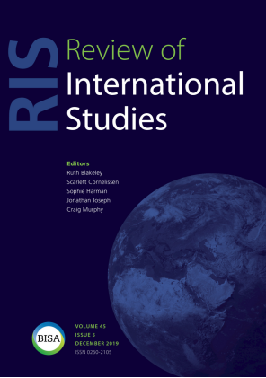

收录于合集

作品简介
【作者】 亚历山大·温特（Alexander Wendt），著名国际关系建构主义学者，现任俄亥俄州立大学政治学系教授。其1999年出版的代表作《国际政治的社会理论》（Social Theory of International Politics）曾于2006年获得国际研究协会（International Studies Association）的“十年来最佳书籍”荣誉，对国际关系理论的丰富与发展产生了深远影响。他的研究兴趣在于社会科学的哲学方面，其2015年的新著《量子思维与社会科学》（Quantum Mind and Social Science）更是推动社会科学的边界与量子力学接壤的卓越创新。
【 编译】 周玫琳（国政学人编译员，伦敦大学亚非学院历史系博士研究生）
【校对】 赵雷
【审核 】 王川
【排版】 高佳美
【 来源 】
Wendt, A. (1998). On Constitution and Causation in International Relations. Review of International Studies, 24 (5), 101-117.
期刊介绍

Review of International Studies（《国际研究评论》）是国际关系领域的同行评审学术期刊，由剑桥大学出版社代表英国国际研究协会（British International Studies Association）出版。该期刊旨在突破学科传统，反映全球政治的最新变化与当代理解，推动国际关系学科理论、概念与方法的全方位创新。该期刊2018年的影响因子为1.791，在91种国际关系类期刊中排名第24位。
国际关系中的建构关系与因果关系
On Constitution and Causation in International Relations
亚历山大·温特
内容提要
承接以实证主义与后实证主义之辩为主轴的国际关系学科第三次辩论，本文否认这场辩论中一种常见的混淆，即把寻求因果机制和社会规律的“解释”和关注行为体信念与意义的“理解”之间的区别视作“科学”与“非科学”之别。本文认为，“解释”与“理解”的区别是因果性问题和建构性问题之别，在自然科学和社会科学中都是常规实践。两个领域中适合回答这些问题的数据和方法有别，是因为“自然类别”和“社会类别”本体论上的不同，而非认识论上的差别。此外，对建构性问题的回答不仅仅是描述，也是解释，只是这种解释并非因果性的。通过本文的论述，作者旨在强调建构性理论与因果性理论具有同等的重要性，敦促国际关系学界纠正对“实证”与“科学”的狭隘认知，摆脱认识论上的偏见与束缚，以开放的心态共同促进学科的进步。
【编者按】
作为建构主义国际关系理论的领军学者，亚历山大·温特的大部分作品至今仍在国际关系学界被视为经典，包括本文。经过大幅缩减，本文被部分收录于他于1999年出版的代表作《国际政治的社会理论》。不同于该书致力于为国际政治研究树立一套社会建构理论的尝试，温特在本文中呈现的目标更为基础，并非完全是为建构主义背书，而是为那些期望以
实证主义科学方法
探究国际关系的学者带来启发。我们对“实证”与“科学”的理解是否过于狭隘？我们以为合格的社会科学研究方法是否无懈可击？温特在本文中与上世纪90年代的多种主流社会科学方法论思想进行了对话，而今天我们能接触到更多此类优秀作品，他们又将温特的回应纳入了新一轮学术思想的激荡。如读者对此有兴趣，建议拓展阅读Jackson,
P.(2016).TheConductofInquiry in International Relations. London:
Routledge.※注：作者通篇用首字母大写的“Explanation”特指与“外部叙事”及因果性理论对应的研究路径，用小写的“explanation”表示一般意义上的解释。在编译中，前者均带引号译作“解释”，而后者不加引号。
文章导读
一、 导言 ****
如今，国际关系学者之间有一个认识论上的深刻分歧： 我们在多大程度上以及用何种方法能够认识研究对象？广泛而言，一方是所谓的 “实证主义者”（positivist） ，他们认为我们只有遵循那些在自然科学中被证实成功的方法，才可以接近国际政治的真相；而另一方是 “后实证主义者”（post-positivist） ，他们认为我们并没有了解国际政治真相的特权，而自然科学的方法最不可靠。这种认识论上的分歧对理解现实世界的集体努力而言意义重大，因为我们无法避免在此选择立场，而这些立场影响我们提出与回答的问题，最终影响到我们生产的知识。因此，这场看似关乎哲学家而非政治学家的争论成为 国际关系学科第三次大辩论 的主题之一；在此之前，这场争论也构成了20世纪60年代国际关系学科第二次大辩论——行为主义（ behaviouralism ）与传统主义（ traditionalism ）之争——的思想基础。第三次大辩论涉及的问题很多，而作者最感兴趣的是一种关于这场辩论的常见表述， 以马丁·霍利斯（Martin Hollis）和史蒂夫·史密斯（Steve Smith）的作品《解释与理解国际关系》（Explaining and Understanding International Relations） 为代表。这种表述认为，面对其研究对象，社会科学家们必须在两种研究“路径”（approach）或“叙事”（story）中选其一。第一种叙事是外部的，其讲述方式遵循自然科学解释自然现象的方法，将人类领域视作自然界的一部分。 外部叙事 旨在寻找因果机制和社会规律，即 “解释（Explaining）” ，经常被等同于实证主义路径。另一种叙事是内部的，让人理解事件的意义，这种意义与发现自然规律的意义全然不同。 内部叙事 旨在重新关注个人与驱动他们行为的共同意义，即 “理解（Understanding）” ，经常被等同于后实证主义路径。尽管有学者认可这两种路径各自的价值，但这种将“解释”和“理解”二分的表述其实是一种更具争议性的零和观点的产物。矛盾植根于许多实证主义者和后实证主义者共享的一个假定： 自然科学的特点是强调外部对因果“解释”的关注，而不包含内部对行为体“理解”的关注。 正因为自然科学构成了我们的“科学”模型，所以上述假定意味着： 社会科学家面临的是“科学”与否的选择（即从事外部叙事就是“科学”，从事内部叙事就是“非科学”），而非在两种都属于科学事业的认知方式（“理解”和“解释”）中选其一 。对实证主义国际关系学者而言，由于他们倾向于将其作品的知识性权威（epistemic authority）树立为“科学”，因此，他们强调国际关系的首要目标必须且只能是“解释”。对后实证主义国际关系学者而言，由于他们的兴趣在于“理解”，因此他们拒绝将自己的作品归为科学，甚至有学者否认在社会探究中进行“解释”的可能性。这种 将“解释”和“理解”之间的差别视作“科学”与“非科学”之别的信念， 成为20世纪90年代学界展开认识论上的“范式之争”的原因之一。表面上看，关于自然科学不参与“理解”的假定似乎有道理，毕竟自然科学的研究对象没有意识也不能产生“理解”。但作者认为， 尽管自然科学与社会科学的研究对象在本体论上有重要差别，二者在认识论上并没有根本不同。 这两种科学领域 都在实践“解释”和“理解”这两种智力活动 。所以，将“解释”与“理解”之别视作“科学”与“非科学”之别的观点是有误导性的，它助长了认识论上不必要的零和争论。这些争论只会危害我们认知国际政治的共同努力，并由于倡导“解释”的学者占主导地位而造成倡导“理解”的学者在专业领域被边缘化。作者认为，“内部叙事”或“理解”的精髓在于对某种特定问题的兴趣。总体而言，这一问题是： “世间事物是如何被组成为拥有其特性的存在的？ ” 它在自然科学与社会科学中都是常规问题，但学者们回答它的方式有所不同，因为他们的研究对象分别是大部分由观念（ideas）构成的 “社会类别”（social kinds） 和由物质（physical substance）构成的 “自然类别”（natural kinds） 。如果我们想探究“社会类别”是如何被组成的，我们必须阐释行为体私人或共享的信念；而如果我们想探究“自然类别”是如何被组成的，我们必须研究它们的基因、化学物质和其他物质结构。这说明，对行为体信念的兴趣并非内生于“内部叙事”或“理解”，而是由组成社会科学研究对象的特性的本质所决定的。换言之，国际关系学科第三次大辩论往往混淆了分别从属于本体论和认识论的两个问题：“事物是由什么构成的”，以及“我们应该提出什么问题”。通过打破这种混淆，我们会发现“解释”和“理解”不仅不互相排斥，还彼此牵连。如果“解释”与“理解”并非由“科学”与“非科学”所区分，而是被它们所提出的问题所区别，那么就需要描绘这些问题的特征。在多种可能的方案中，作者选择了如下简洁的概括： “解释”提出因果性（causal）问题，而“理解”提出建构性（constitutive）问题。 这两种问题之间的区别没有被充分认识，常被混淆，且这种情况在国际关系学术研究中日益普遍。下文的第一节的主要探究这两种问题的区别，尤其着重介绍建构性问题，因为人们对因果性问题相对更了解。下文的第二节主要回应 加里·金（Gary King）、罗伯特·基欧汉（Robert Keohane）和悉尼·维巴（Sidney Verba）在《社会研究设计》（Designing Social Inquiry）中的观点。 他们认为“解释”和“理解”之间的差别在于前者是“因果性推论”，而后者是“描述性（descriptive）推论”，两者都是科学的重要部分，但他们质疑与“理解”相关的非因果性研究是否具有解释力（explanatory）。但本文作者认为，“解释”与“理解”之别不在于该书所论的解释与描述之别，而在于对不同的因果性问题和建构性问题的回应。
二、 因果性理论与建构性理论 ****
在科学哲学（philosophy of science）中，区别不同解释类别的一种常用方法是区别他们回答的问题。这种方法可以用来区别因果性理论和建构性理论。因果性理论主要回答以 “为什么（why?）” 为形式的问题，有时也会问 “怎么样（how?）” 。探究因果性的学者们对“怎么样”问题的重要性认识不一，这反映出不同的因果性概念。逻辑经验主义者（logical empiricist）认为，只有在回答“为什么”问题的普遍规律下对某事物进行演绎解释时，才能实现对该事物的因果性解释；而科学实在论者（scientific realist）认为，只有描述了事物产生的机制或过程，才能实现对该事物的因果性解释，这增强了“怎么样”问题的重要性。这些争论很重要，但本文没有继续深究，因为它们毕竟都从属于追求因果性解释的阵营。（编者注：温特在《国际政治的社会理论》第二章“因果关系和建构关系”中对此作了扩充论述。）在回答因果性问题时，如果说“X是Y的原因”或“X导致了Y”（X causes Y），其背后其实有三个假定： （1）X与Y的存在是相互独立的； （2）在时序上，X先于Y发生； （3）如果没有X，Y不会发生。 对探究因果的学者而言，前两个条件不是什么难题，关键在于第三个反事实的条件（counterfactual condition），它涉及到将因果关系与相关关系（correlation）相分离、将必然关系（necessary）与偶然联系（accidental association）相区隔。实现这一点很难，因为我们不能直接经验（experience）因果关系，无法期望确切地知道一组因果效应，于是在方法论上我们要关注如何提高不可避免的推论（inferences）的质量。不过，因果性问题和建构性问题的区别主要在前两个条件，因为建构性理论不做这种假定。上述假定（共同）反映了因果性理论的核心目标：解释某些变量或系统状态下的 变化 。因此，也有学者将因果性理论称作“变迁（transition）理论”。为了解释“变迁”，必须使我们研究的因素（factors）独立于或时序上先于变迁本身，所以“自变量”和“因变量”之类的术语在因果性理论中常用。建构性理论有着与因果性理论不同的目标，旨在通过参考事物存在的结构来解释其属性（property），因此也被称为“属性理论”。不同于在时间中解释事件的变迁理论，属性理论是静止的，其目标是揭示一个系统的属性是如何被建构的。尽管这些系统本身可能甚至完全是动态的，但建构性理论抽象于这些过程，关注静态，努力解释系统是如何被建构的。于是，建构性问题经常采用 “怎样才成为可能（how-possible）” 或 “是什么（what）” 的形式。例如，卢森堡在一个无政府世界内与法德等大国比邻却生存下来，这是怎样成为可能的？地球能将月球维持在其轨道上，这是怎样成为可能的？通过提出这类问题，我们旨在洞察是什么把某些现象实例化（instantiate），而非探究为何现象会出现。对建构性问题的合格回答必须满足的假定与因果性问题有所不同。与后者相仿，对建构性问题的回答也必须支持一个有关必要性（necessity）的反事实条件：如果没有我们探究的结构（structures），问题中的属性不会存在。但这种必要性是概念性或逻辑性的，而非因果性或自然的。建构社会类别“冷战”的因素和冷战之间的关系不是因果决定性的，而是一种身份认同（identity）关系，因为这些因素定义了冷战是什么。这也意味着，对建构性问题的回答有必要拒斥因果性理论的前两条假定：独立存在与时序先后。建构冷战的因素不脱离于冷战之外存在，也不在时间上先于冷战；通过定义（definition），冷战与建构冷战的因素同时存在。这意味着， 在建构性探究中，作为因果性探究特征的“自变量”与“因变量”语言没有意义，或至少必须被重新阐释（interpret）。 可以说，建构性结构的效果随其建构条件“变化”，但这组变化中的依赖性（dependency）是概念性（conceptual）而非因果性的。当建构条件变化，其建构效果也会随定义变化。然而，尽管二者的假定不同，这并不意味着因果性理论和建构性理论的认识论有所不同。两种理论的正确或错误都取决于它们与世界（真实）状况的相符（correspond）程度。后实证主义者或许会反对这样一种相符性检验，因为他们认为人类没有直接获知世界是怎样被建构的能力，我们对世界的观察总是且必须经过自身的背景知识这一中介。作者同意 所有的观察都是被理论约束的（theory-laden） ，我们无法直接用（真实）世界来检验自身的理论，而是必须间接通过其他竞争性的理论（ 这种路径依然符合国际关系实证主义 ）。对因果性理论和建构性理论两者而言，解决这一问题的“科学”方法是一样的，即依赖公开的但总是被理论约束的 证据 ，那些批判我们理论主张的人可以 评估这些证据的相关性与准确性等方面。 即便是最强硬的后实证主义者也不能否认这些证据的重要性。后实证主义者对建构性理论的相符性检验提出质疑，只是为了得出以下结论：他们的研究需要和因果性理论不同的认识论。但其实他们要想得出这一结论，还有别的路径：首先，强调自然世界与社会世界在本体论上的区别，即二者分别由物质实体与观念构成；然后，将物质主义本体论（自然科学）与因果性理论相连，将观念主义本体论（社会科学）与建构性理论相连。如果这种联系有道理，那么它可能会意味着自然科学和社会科学有不同的认识论，因为我们“知道”两种理论正确与否的方法会在两个领域中截然不同。的确，自然世界与社会世界至少部分由不同类的事物构成，而这种本体论上的区别需要不同的方法和数据来展开研究。然而， 这并不说明自然科学和社会科学有认识论上的区别，因为设想物质条件意味着因果性理论而观念意味着建构性理论本身是错误的。 物质和观念两者都有因果性和建构性效应。一方面，观念在使社会类别成为可能的范围内有建构性效应：如果没有建构他们身份的共同认知，奴隶主与奴隶不会存在。但这些共同认知对奴隶主和奴隶也有因果性效应，它们以独立存在并在时序上靠前的机制（编者注：即奴隶制）为形式运作，驱动并促成他们的行为。物质实体也有同样的双重角色。人脑是一个产生智力行为的因果性机制，但它也是人之所以可能为人的一个条件。事实上，自然科学中一些最重要的理论是建构性而非因果性的，例如DNA的双螺旋结构和热力学理论。如上所述，自然科学和社会科学都有因果性和建构性问题，两类问题的区别不能被简化为物质和观念之别。虽然我们在两个领域内回答这些问题的证据类别不同，但问题本身并没有实质区别。
三、 作为解释的建构理性理论 ****
金、基欧汉与维巴在《社会研究设计》一书中同意“理解”或建构性理论是一种重要的智力活动，但该活动是一种“描述性推论”（descriptive inference）。这种观点很有吸引力，毕竟建构性分析确实有很多描述性成分；而且通过突出“推论”，他们强调描述不只是对观察的汇报，还需要理论来汇总和理解这些观察。但归根结底，本文作者认为这种对建构性理论的阐释存在不足。 建构性理论提供解释 （编者注：原文为小写explanation，不同于前文译作“解释”的Explanation） ；这些解释并非因果性的，但它们仍是解释。 在驱散有关非因果性解释的“困惑”之前，作者从两点论述了为何我们应该关注“描述性推论”这个看似咬文嚼字的问题。第一点是修辞性的（rhetorical）的，但它对知识社会学（sociology of knowledge）非常重要。尽管金、基欧汉与维巴呼吁社会科学家们重视描述性推论本身，但在这些对其“科学”知识地位感到担忧的学科中，将自己研究的特征标榜为解释性（尤其是将其区别于历史学）的动机是很强的。 只要这种担忧存在，学者们（尤其是年轻学者）就会面临强烈的学科压力，从而不重视描述性推论，而要“超越”描述走向因果性推论。 因果性推论当然重要，但在今天的社会科学中，一部作品被贴上“描述”标签的含义是如此负面，以至于所有的学者都想被视为参与解释。在短期内，将建构性理论视作描述性推论难免还会强化如下偏见：它是次优的、较差的、不完全“科学”的。第二，作者强调“描述性推论”这种语汇可能会对大量的社会探究造成误导，尤其是对建构性理论可以产生的知识及其应用造成误导。将建构性理论视作描述性而非解释性，会造成社会类别“具体化（reification）”或“自然化（naturalization）”，这遮蔽了社会建构进行的程度，反而使我们将其视作独立于人类思想与行动的自然类别。我们应该将建构性理论视作解释性而非描述性的，但如何理解这种解释的本质和非因果性特征呢？作者从两种典型的建构性问题——“是什么（what）”问题和“怎样成为可能（how- possible）”问题——入手进行解答，因为针对二者的答案所作的解释有所不同。 “是什么” 问题从表面上看完全是描述性的。当一个小孩问她的家长：“那是什么？”她可能会满足于“（这是）一只狗”的回答。这个回答显然不包含多少解释。但如果孩子继续问：“什么是一只狗？”家长或许会说：“（狗是）人类最好的朋友。”针对这个看似描述性的回答，英文允许我们做一种解释性的解读：家长在解释狗的社会角色，也在通过提及“朋友”这一身份来解释狗并不危险。这两种解释都不是因果性的。或许有些咬文嚼字，但这个十分浅显的例子告诉我们，对 “是什么”问题的回答未必完全或毋庸置疑地是描述性的，而是有不同程度的解释性内容。 “是什么”问题的解释性潜力在我们面对 不可观察的事物（unobservable） 时尤为清晰。如果我们问一位天文学家：“望远镜中（显示的）那个被所有恒星围绕着螺旋卷入的黑点是什么？”她或许会说：“是一个黑洞。”除了描述性，这个回答也解释了黑洞的一些能力（如吸收光与恒星），这个解释是通过提出一个这些能力赖以存在的结构而实现的。换言之，一旦我们将这个黑点归类为黑洞，我们就做出了一个理解该现象的推论；而一切推论都是基于理论的，理论的核心特征之一又是解释。为了进一步说明，作者又举了一些社会类别的例子，例如：面对提问“1929-1933年西方经济活动的下行（现象）是什么”，可以回答“大萧条”。这种答案部分是描述性的，但也是解释性的，因为它将观察（的结果）归类（classify）于此并将它们统筹（unify）为某个整体的部分。具体到国际关系领域，有一个有趣的例子可以说明上述原理：“什么是欧盟？”它是一个崛起中的联盟？一个国际政权？一个后现代国家？这些提法都在尝试将一组多元又复杂的现象归类并统筹在某个单独的概念下。这些概念既是描述性的也是解释性的，但它们的解释是建构性而非因果性的。每个概念都在尝试理解欧盟的属性，并在此过程中提供关于 其行为倾向（disposition） 的洞见。例如，如果欧盟是一个崛起中的联盟，那么它就有集中权威的行为倾向；如果欧盟是一个国际政权，那么它就有维护各国主权的行为倾向。行为倾向有一个关键特征： 如果相关激活条件不存在，行为倾向不会成为行为现实。 例如，盐具有遇水溶解的行为倾向，但如果它不被置于水中，就不会溶解。 一旦行为倾向被实现，我们就到达了因果性而非建构性的领域。 正是在此，因果性理论与建构性理论彼此邻接，但二者并不等同。 通过概念进行解释（explanation by concept）的主要目标之一就是解释行为倾向。 通过概念进行解释这种方法在社会科学中十分普遍，不仅在国际关系领域，在历史学、经济学、心理学都有广泛应用。当然，这不是唯一的解释方式，作者也不是要用其取代因果性解释。关键在于， 对“是什么”问题的回答应当被视作一种有价值、独特的理论化方式 ，只要被理解得当，其解释性会获得不亚于描述性的成功。在回答“是什么”问题之外，我们有时还想更了解某个社会或自然类别赖以获得属性或行为倾向的结构，即了解 “怎样成为可能” 。通过告诉我们一个类别的元素是如何被组织以至于塑造了它的属性，对“怎样成为可能”问题的回答具有解释性。这种解释被约翰·豪格兰（John Haugeland）称为 “形态性解释（morphological exlanation）” ，它具有两种形式，分别对应着内在与社会两种能够建构类别的结构。 内在结构（internal structure）是指一个事物本身的结构。 例如，水是被H2O这种原子结构建构的，人类是被基因结构建构的，国家（部分地）是被那些赋予它们在领土内垄断权有组织暴力的组织性结构建构的。在这些例子中，诉诸内在结构并不能因果性地解释与其相连的种种属性，因为结构与属性不互相独立存在。但它们也不只是描述，因为分析者在利用一组事实来解释另一个事实，这是一种建构性描述。当我们参照内在结构解释一种事物时，我们就参与了 “还原主义（reductionism）”或“本质主义（essentialism）” 活动，其假设是事物的外部特征可以被还原至一个内在的核心或精髓。在自然科学中，这是回答“怎样成为可能”问题的主流方法，因为自然类别实际上大部分是如此建构的。因此，自然科学中的建构性解释难免是本质主义的。本质主义在社会科学中是比较有问题的。通过将社会类别的属性还原到各自的内在结构，一些社会科学家用本质主义、自然科学式的方法寻求建构性解释 。在这种通常被视作与 方法论上的个体主义（methodological individualism） 等同的观点看来，社会类别的属性应该能被还原到彼此独立存在的代理人（agent）的特性与互动上。本文有限的篇幅不足以充分批判方法论上的个体主义，但作者认为，我们应该对社会类别总能被还原到内在结构的说法存疑。 社会结构（social structure） 是指定义某社会类别的一套与其他行为体的关系，例如奴隶与奴隶主（的关系）。两者都是有特定属性与行为倾向的社会类别：奴隶主有所有权和强制服从的能力，奴隶有财产属性和逃脱的愿望。如果我们想解释奴隶主怎样贩卖他的奴隶，就必须援引（invoke）奴隶主和奴隶之间以及更广的社会所共有的令人口贩卖成为可能的观念结构。这种社会结构不仅描述了奴隶主的权利，还对其做了解释，因为没有这种结构就不会有这些定义下的权利（rights by definition）。这种解释不是因果性的：奴隶制的社会结构不独立于奴隶主贩卖奴隶的权利，也没有导致这种权利的产生。这是一种建构性的解释，奴隶主的权利概念性或逻辑性地依赖于奴隶制结构：当后者存在，前者通过定义获得存在。尽管国际政治的社会结构比国内政治简单，仍有很多社会类别的属性是被社会结构变为可能的。关于国家属性如何能被社会关系建构性解释，最被广为接受的例子是国家主权。卢森堡这样的弱国在无政府状态的世界被强国包围，它的生存怎样成为可能？答案在于其他国家认可其作为权利的主权——其实质结果是对生命、自由和领土的权利——并由此不去征服它。即便主权不独立或先于这些使生存成为可能的权利，它依然能够解释国家的生存。 将建构性理论视作解释是重要的，这部分只是因为这是事实；它不只是描述，也不是因果性解释。 但作者认为同样重要的是，将主权“去自然化”能够增加国际社会做出进步性改变的能力。
四、 结 论 ****
****作者认为对国际关系而言，真正重要的是本体论而非认识论，本文探讨的问题最好能交由哲学家和知识社会学家来解决。但事实是，国际关系研究面对大量的研究问题，心态并不开放，而是倾向于被认识论和方法所裹挟。
于是国际关系学者不能简单地拒绝认识论话语。问题在于这种话语已经污染了我们对国际政治的思考，使学科极化到“范式之争”的状态。虽然这些“范式之争”在20世纪80-90年代的复兴大部分是由于后实证主义的兴起，但其
根源在于实证主义者自身的认识论焦虑： 他们从20世纪50年代起就特别关注将其作品树立为 “科学” 的权威。这个目标的重要性作者也认可，
但其实践却被一种过于狭窄的科学概念所破坏，这种科学只与能用自然科学方法解答的因果性问题有关。
结果，不适应这种模式的历史性、阐释性作品被边缘化，对这类研究有兴趣的学者将自己视为未参与科学。第三次辩论对认识论的争论经常沦为
对科学片面又偏颇的夸张模仿。
基于对《解释与理解国际关系》和《设计社会研究》的回应，作者总结了本文的两个论点。一，“理解”与“解释”的区别是因果性问题和建构性问题之别，在自然科学和社会科学中都常被提出。两个领域中适合回答这些问题的数据和方法有别，是因为自然类别和社会类别由不同的事物构成，但这不是认识论上的差别。两个领域在理论建构、对不可观察事物的推论、用公开证据评价知识论断等问题上相似。这一点即使是后实证主义者也认可。因此，有必要直截了当地思考作为实证主义社会研究一部分的建构性研究或“理解”。二，对建构性问题的回答不仅仅是描述，也是解释，只是这种解释不是因果性的。因果性理论和建构性理论都可以既描述又解释。这个论点的结果是把建构性理论提升到一个与因果性理论相当的自主平等地位，使其自身值得研究，而非被视为某种在从事科学前必须超越的东西。这一论点还强调了共同观念在社会类别生产中的角色，将其“去自然化”，拓展了做出进步性改变的可能。
认识论上的“互相防范”不如对彼此青睐的问题“互相认可”。具有反思性、批判性的国际政治科学需要每一种能够获得的知识。 **
** _ ** _ ** _ ** _ 本文由国政学人独家编译推荐**__
扫下方二维码查看往期精彩
【新刊速递】第01期 | Review of International Studies Vol.45, No.4, 2019
【新刊速递】第02期 | International Relations Vol.33, No.3, 2019
【新刊速递】第03期 | International Organization Vol.73, No.3, 2019
【新刊速递】第04期 | World Politics, Vol.71, No.4, 2019
【新刊速递】第05期 | European Journal of International Relations
【新刊速递】第06期 | Security Studies, Vol.28, No.4, 2019
【新刊速递】第07期|International Secur.ity, Vol 44, No. 2, 2019
【新刊速递】第8期| Cambridge Review of International Affairs,Vol.32,No.4
【新刊速递】第09期| International Relations of Asia-Pacific Vol.19,No.3
【新刊速递】第10期 | International Studies Review, Volume.21, No.3, 2019
分类导览 1
分类导览 2

点“在看”给我一朵小黄花